出張申請アプリ
- Webアプリ
- 自主制作

出張の社内申請をオンラインで行えるSaaSアプリを自主制作しました。 以下で、制作サマリーと制作プロセスを紹介します。
- カテゴリー：Webアプリケーション、SaaS
- 制作種別：自主制作
- 担当領域：要件定義、情報設計、ビジュアルデザイン
- 使用ツール：Figma
- 制作期間：1.5ヶ月
どんなアプリか
本プロダクトは、「社内で紙運用されていた出張申請フローの完全オンライン化」を目的としたプロダクトデザインの演習です。 ビジネス要件として定義された既存のフローと要求事項に対し、ユーザーが迷わず、かつミスのない運用を可能にするため、情報設計（IA）とインタラクションデザインに主眼を置いて制作しました。
「現場の申請から経理の精算までを最短ルートで完結させ、組織の承認停滞と管理工数を最小化する出張管理システム」をコンセプトに、申請作成から承認、精算までを行えるプロダクトとなっています。
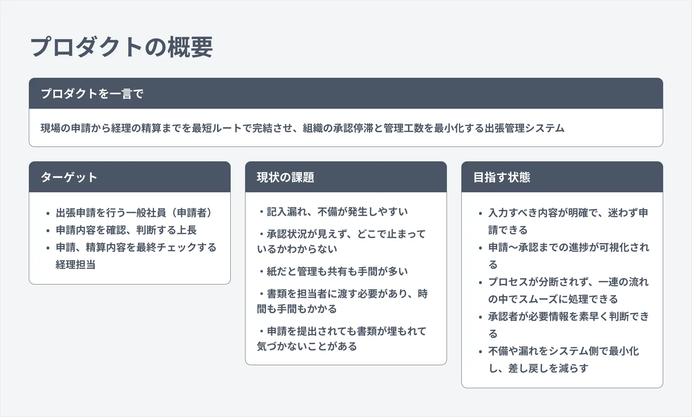
プロトタイプ/figmaファイル
＊拡大推奨
TripliteのFigmaファイルはこちら
要件定義、情報設計、ビジュアルデザインのデータを公開しています
デザインのポイント
ポイント①：OOUIに基づく一貫した情報設計
本プロジェクトでは、表層的なUIの見た目や操作性だけでなく、アプリケーション全体の情報構造とナビゲーションを設計することに重点を置きました。 業務フローをオブジェクトモデリングによって丁寧に分解し、複雑化しやすい業務フローをシンプルで一貫した構造に落とし込みました。
その結果、ユーザーは画面ごとに意味や操作方法を迷うことなく、自身が行うべきタスクの位置づけを自然に把握できるようになり、 学習コストが低く、メンタルモデルに沿った利用体験を提供できる設計となっています。
ポイント②：新規申請をモードのステップ式に
新規申請のページは、単一ページ式にするか、ステップ式にするかに関して、両者のUIを作成しプロトタイプを動かした上で、 それぞれのメリット・デメリットを比較し、出張申請の性質（利用頻度・正確性等）や、想定ユーザーから考え、ステップ式のUIを採用しました。 また、新規申請の作成という重要な操作であることから、操作へ集中させるためモードを採用しました。
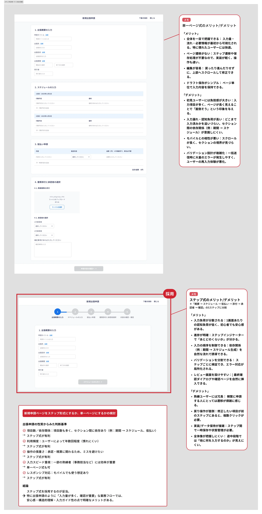
ポイント③：ボタンのスタイル、配置、文言に関して
ボタンに関しては、見た目だけでなく「意味」と「挙動の解釈」を間違えさせないことを重視して設計しました。 まず、ボタンやラベルの文言は、ユーザーが迷わず意図を読み取れることを最優先にし、「送信」「登録」など抽象的な表現ではなく、 「申請を提出する」「差し戻し理由を送信する」など、操作の結果が具体的にイメージできる表現に統一しています。
スタイルや配置については、Human Interface Guidelines や Material Design、一般的なユーザビリティの知見を参考にしながら、 「ユーザーが最も選ぶ可能性が高い操作はどれか」「破壊的な操作を誤って実行しないためにはどう見せるべきか」といった観点で検討を重ねました。 プライマリーボタンとセカンダリーボタンの強弱、右左どちらに配置するか、破棄・削除系アクションの色や位置などを整理し、 誤操作を防ぎつつ、自然に優先されるべき操作に目がいく構成にしています。
また、主要なボタンにはテキストだけでなくアイコンを付与し、意味を視覚的にも補強することで、認知負荷の軽減と操作の素早い判断を助ける設計としました。
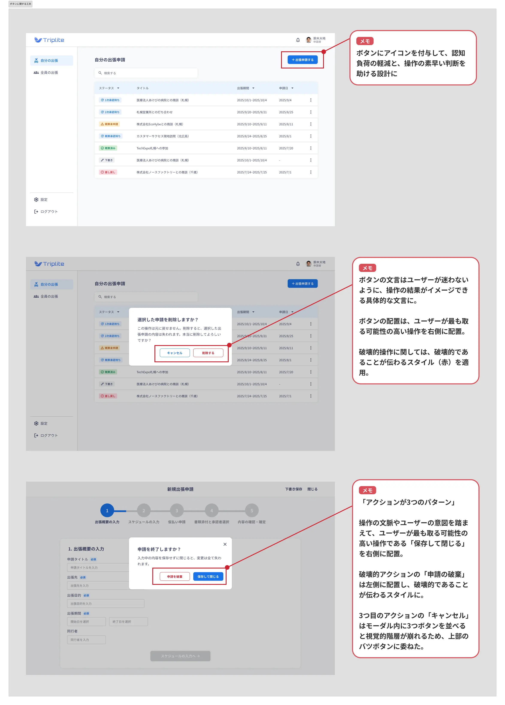
ポイント④：ナビゲーションの設計
ナビゲーション設計にあたっては、まず本サービスのナビゲーション情報のグルーピングと優先づけを行いました。
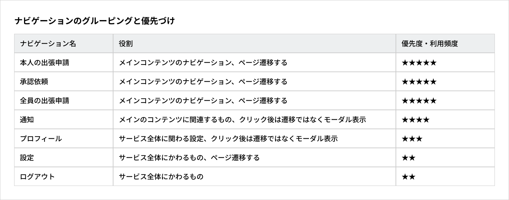
次に、主要なサービス（Youtube, note等）のナビゲーション構造を分析し、ナビゲーションのレイアウトパターンをいくつか作成しました。 それぞれのパターンを比較し、ユーザーの認知や操作性、拡張性を考慮して最適なパターンを選定しました。
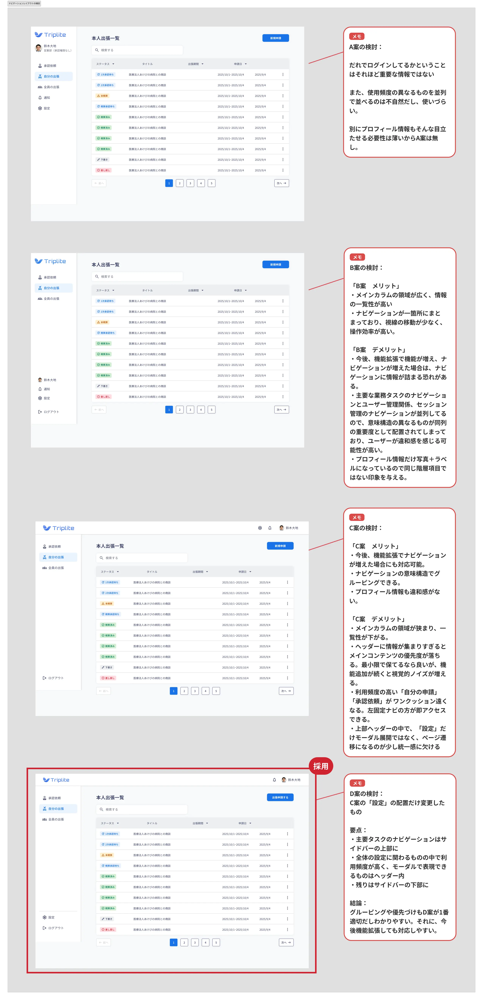
ポイント⑤：申請詳細ページ
申請詳細ページは、ワイヤフレームにスタイルを適用した段階では、情報の一覧性の低さ、情報のグルピングや優先づけ、進捗状況の分かりやすさに課題がありました。 そこで、構造の似たサービスの構造を分析し、情報の優先づけやグルーピングを再定義した上で、現状の課題を解決したUIを作成しました。
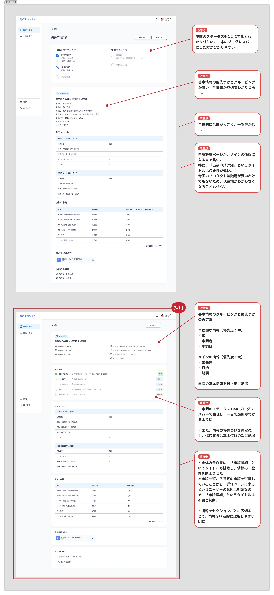
ポイント⑥：承認フロー
承認操作は業務上の重要度が高く、誤操作や見落としが許容されにくい領域であるため、「承認専用のモードを用意するべきか」、あるいは「詳細ページ内で承認を完結させるべきか」をまず検討しました。 UIのまとまりやすさだけでなく、ユーザーが行うべき導線（内容確認 → 承認／差し戻し）が途切れずに進められるかを判断基準としています。
検討の結果、詳細ページを起点として承認専用モードへ遷移するパターンを採用しました。 これにより、詳細情報の確認と承認操作が視覚的にも機能的にも分離され、誤操作を防ぎつつ、承認に必要な情報をしっかり確認してから操作できるフローを実現しています。
デザインプロセス
本プロジェクトでは、抽象的な要求事項を具体的なプロダクトへと落とし込むため、リサーチによる課題構造や提供価値の深掘り、ユーザー像の定義から行い、そこから具体的な要件を定め、インタラクションの設計、ビジュアルデザインという手順で進めて行きました。
各プロセスの詳細については、後述のセクションにて解説します。
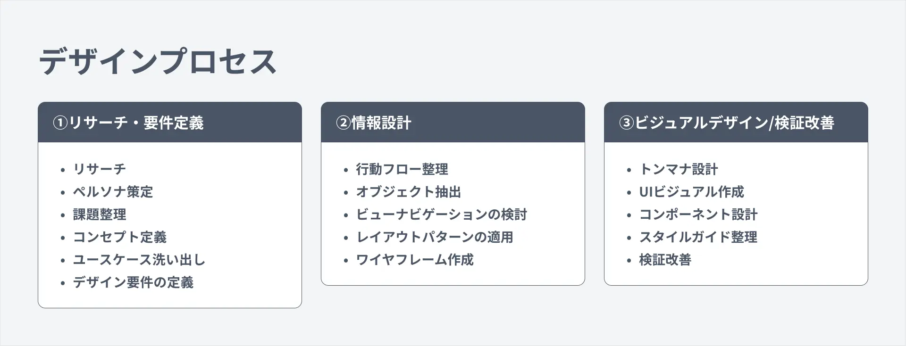
1. リサーチ・要件定義
1-1. プロダクトの前提整理
本プロジェクトは、先ほども説明した通り、社内で長年運用されてきた「紙ベースの出張申請・承認フロー」を完全にオンライン化することを想定したプロダクトデザインの演習です。
設計にあたっては、事前に提示された「現行の紙運用における申請から承認、精算完了までの実務フロー」をベースとしています。既存の社内ルールや承認経路を前提条件として遵守しつつ、デジタル化によって現場の申請・承認フローと組織の管理コストをいかに最適化できるかという点に主眼を置いて設計を進めました。
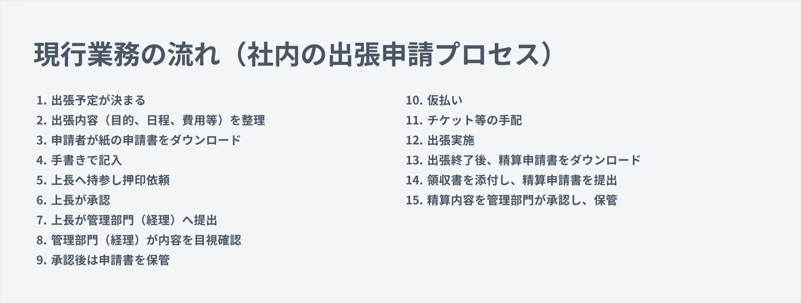
1-2. デスクリサーチ
ユーザー像を定義する前段階として、まずは「出張申請」というドメインへの理解を深めるため、広範なデスクリサーチを実施しました。 既存の出張精算プロダクトが備えている標準的な機能セットや、一般的な承認ワークフロー等を整理。あわせて、既存プロダクトが解決している課題と、それでもなお現場に残っている「デジタル化の壁」についても情報を収集しました。 このリサーチを通じて、「申請から精算完了までの一連のサイクル」において必要不可欠な要素を網羅的に把握。これにより、単なる機能の模倣ではなく、本プロダクトが解決すべき「本質的な不便さ」を定義するための土台を構築しました。
1-3. ペルソナ設計
本プロジェクトは架空の依頼を想定した演習であり、実ユーザーへの直接的なインタビューが困難な状況にありました。 そのため、提示された実務要件の徹底的な分析と、デスクリサーチで得られた市場の標準的な業務フローを組み合わせ、実務上の役割から逆算した仮説ベースのペルソナを構築しました。
出張申請から精算に至るプロセスにおいて、立場によって解決すべき課題が異なる点に着目し、ユーザーを出張の申請者、1次承認者、2次承認者の3つのロールに分類して定義。 それぞれの行動文脈における課題、ニーズ、そして最終的なゴールを深掘りしました。
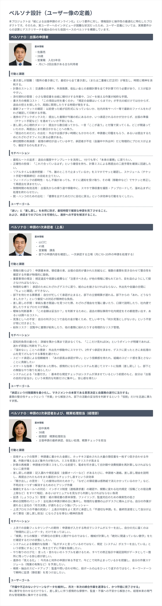
1-4. 要件定義
リサーチ結果と策定したペルソナの分析を通じ、現行の紙運用における本質的な課題を整理。それらを解決し、導入企業が享受すべき「ビジネス的な成果」を明確にするための具体的な要件定義を行いました。
紙運用での最大のボトルネックは、各ロール間の「情報の分断」と「手作業による非効率」にありました。 そこで、本プロダクトでは、「現場の申請から経理の精算までを最短ルートで完結させ、組織の承認停滞と管理工数を最小化すること」を最大の目的として設定しました。 また、設定したゴールを達成するため、「誰が・いつ・何を実現できるべきか」をユースケースとして網羅的に整理しました。これにより、各ロールが迷わず、かつ滞りなく業務を完遂するための機能を具体化しています。
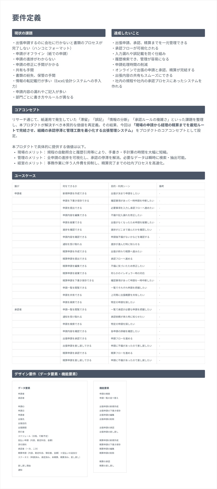
2. 情報設計・インタラクションデザイン
2-1. 行動フローの整理
情報設計およびインタラクションの設計にあたって、ユーザーの主要な行動である既存の申請・承認、および、閲覧共有に関する行動フローを整理しました。
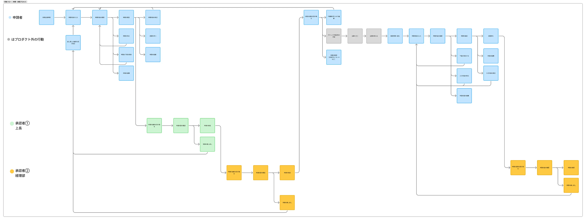
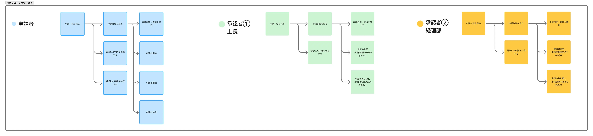
2-2. ビューとナビゲーションの検討
次に、これまでのリサーチ結果や行動フロー、ユースケースをベースに、各ビュー（画面）の役割と、それらの遷移関係および階層関係を整理しました。 申請一覧・詳細・編集・精算・承認といった一連の業務プロセスを画面単位で可視化し、それぞれのビューがどの情報を保持し、どのタイミングで他のビューへ遷移するのかを把握できるようにしています。
なお、この遷移関係は初期案のままではなく、レイアウトパターンの適用やプロトタイプを用いた動作検証を通して、ユーザーの操作負荷等を分析しながら、何度も改善を重ねてブラッシュアップしたものです。
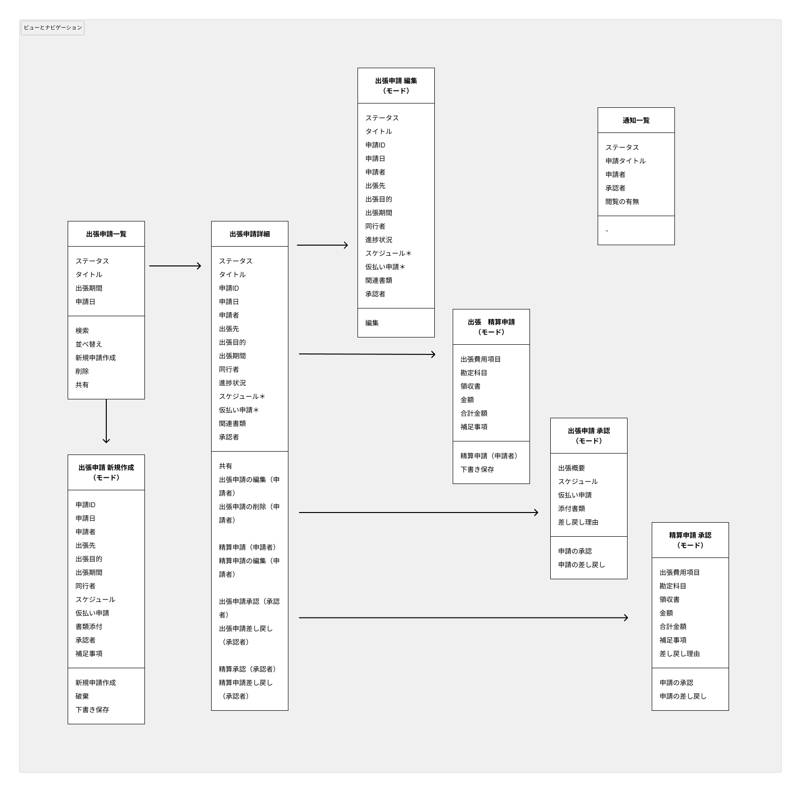
2-3. レイアウト設計
ビューナビゲーションによって各画面の役割と情報の優先順位を整理した後は、それまでのペルソナ分析やユースケースを基に、具体的な画面レイアウトを検討するワイヤフレームの作成へと進みました。 ここでは、業務ツールとしての効率性を最大限に高めるため、定型的な操作を迷わせない標準的なレイアウトパターンを適用し、実務における使い勝手の土台を構築しています。
また、作成したワイヤフレームを元に、実際の画面遷移やボタンの反応を確認できるプロトタイプを作成し、具体的なインタラクションの設計を行いました。「どこを押せば目的の操作が完結するか」といった一連の流れを動く形で可視化することで、静止画の設計だけでは見えてこない操作上の課題を洗い出しています。
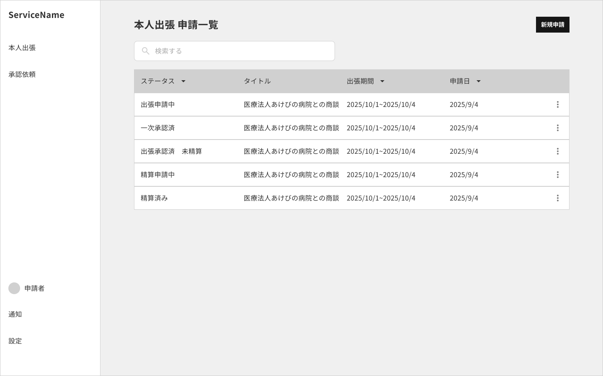
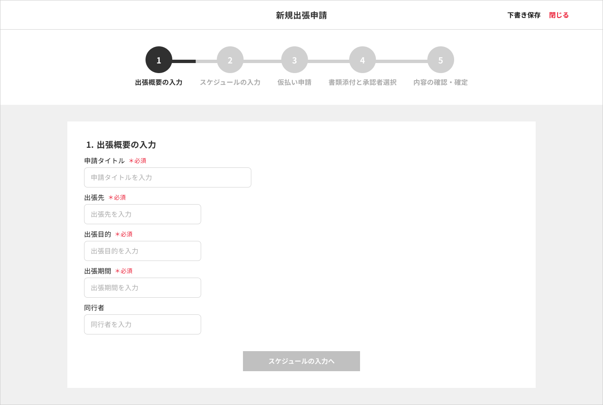
3. ビジュアルデザイン
トンマナ設計
ビジュアルデザインのフェーズでは、本プロダクトがSaaSのプロダクトであることを重視し、感情的な装飾よりも「機能的な美しさ」と「信頼感」を優先したトーン＆マナーを策定しました。
なお、フォントに関しては、Web フォントを使用せず、システムフォントを採用しています。 その理由は、SaaS というサービス特性上、フォントの見栄えを追求するよりも表示速度と操作性の快適さを優先する必要があるためです。 Web フォントは読み込みコストが発生し初回描画が遅れる可能性があるため、OS 標準のシステムフォントを用いることで、軽快な操作体験と十分な可読性を両立しています。
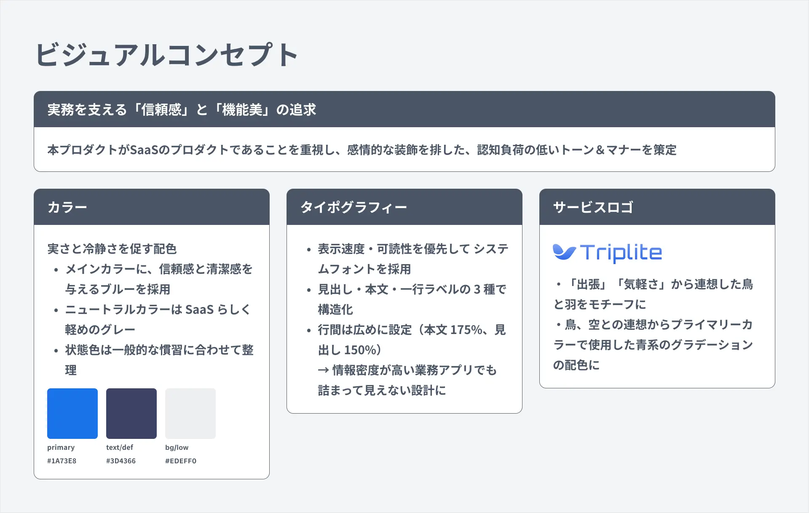
3-2. UIビジュアル
ビジュアルコンセプト・トンマナを定義した後は、ワイヤフレームにスタイルを当てはめ、 UIのビジュアルをブラッシュアップするとともに、関連機能などのUIも設計していきました。 基本的に視認性、操作性の観点から、インタラクションコストを最小化するUI設計を意識しています。
以下、申請一覧ページ
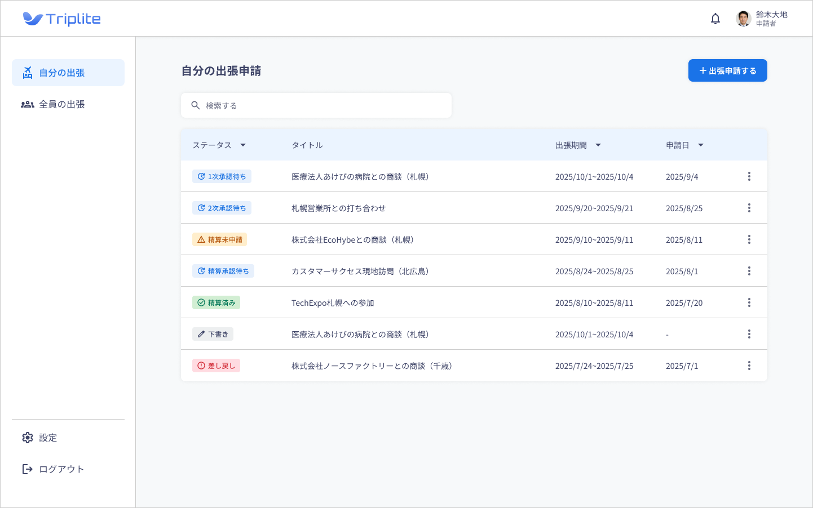
以下、新規申請ページ
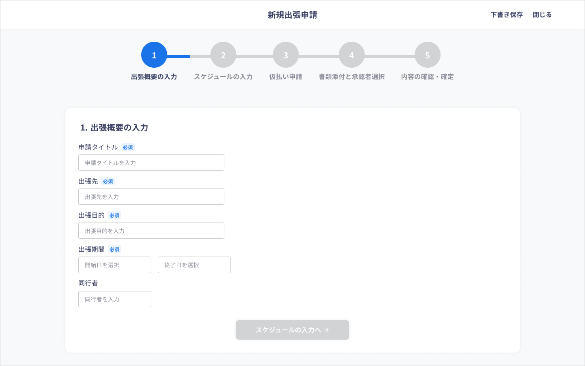
3-3. コンポーネント、スタイルガイド作成
UIビジュアルをブラッシュアップしていく過程で、全体の保守性、一貫性を保てるようにコンポーネントを整理しました。また、合わせてスタイルガイドも整備しています。
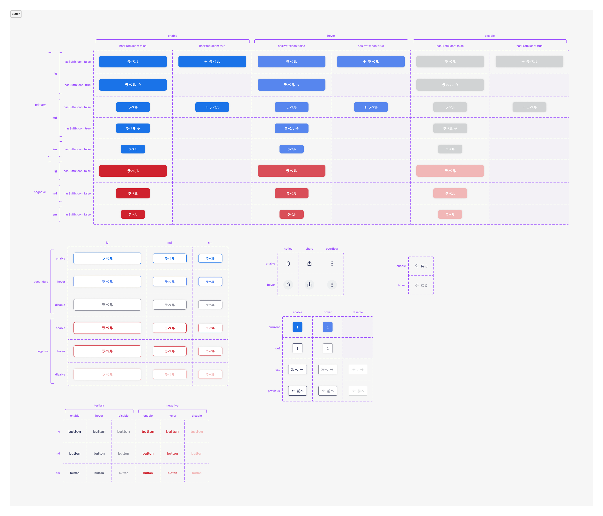
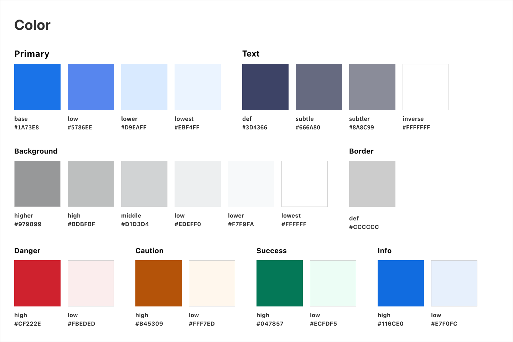
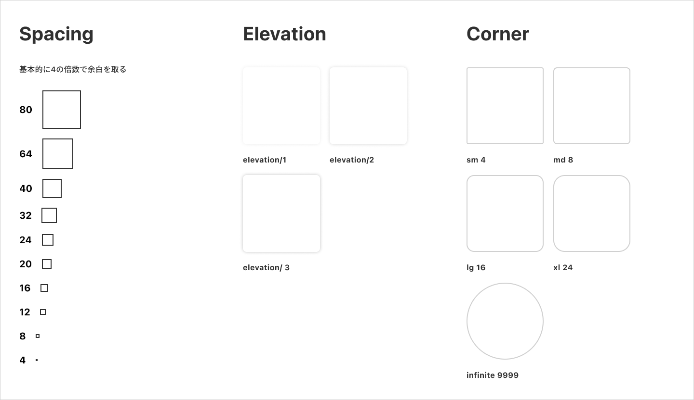
3-4. 検証改善
UIのビジュアルをブラッシュアップしたら、プロトタイプを作成し、実際のプロダクトに近い挙動で細かいフローや情報のグルーピング・配置などの検証と改善を重ねました。
おわりに
今回の題材は「架空のサービス開発依頼」という設定であり、主に情報設計と UI デザインを中心に取り組んだため、 実プロダクト開発で重要となるユーザーリサーチやゼロベースのコンセプト策定は十分に行えていません。 実際の業務では、利用者の行動・文脈・制約から課題を抽出し、それをプロダクトの方向性に反映するプロセスが不可欠であり、この部分については今後の課題だと感じています。
また、今回扱ったフローは「申請 → 承認」という比較的シンプルな構造であったため、実プロダクトで求められるような 複雑な機能間の参照関係や、組織構造・権限設定による分岐までは十分に検討できていません。 より大規模な業務システムでは、データモデル・アクセス権・タスクの依存関係など、UI に影響する構造的な要素が増えるため、 そうしたケースに対応できる設計力をさらに高めていく必要があると考えています。